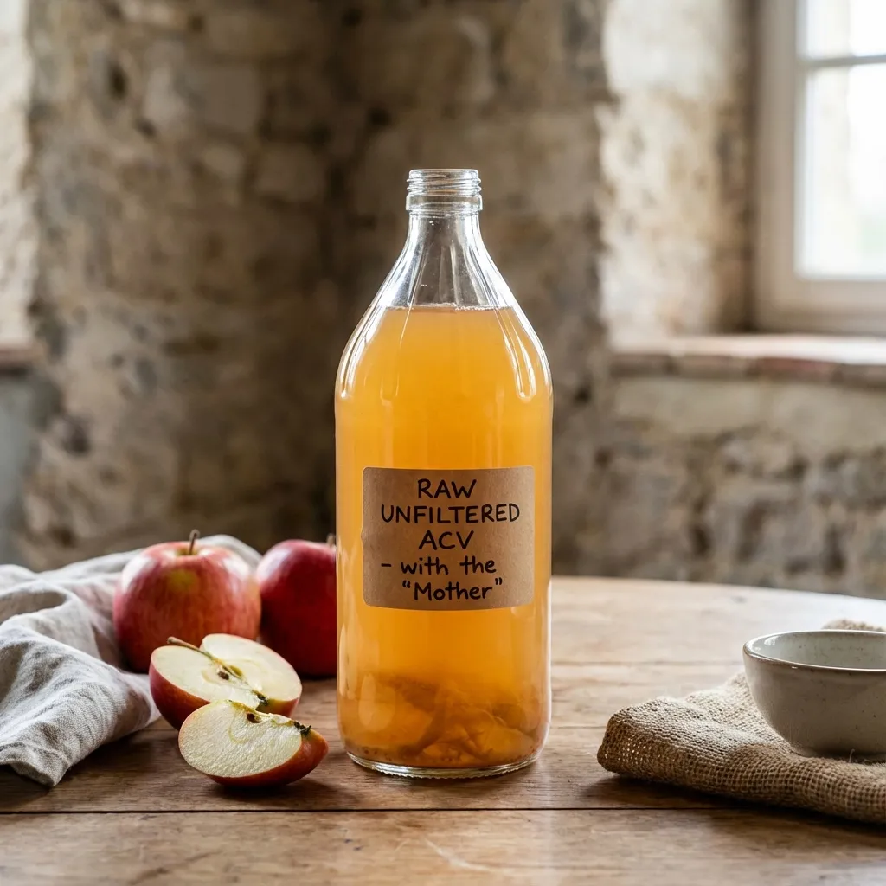
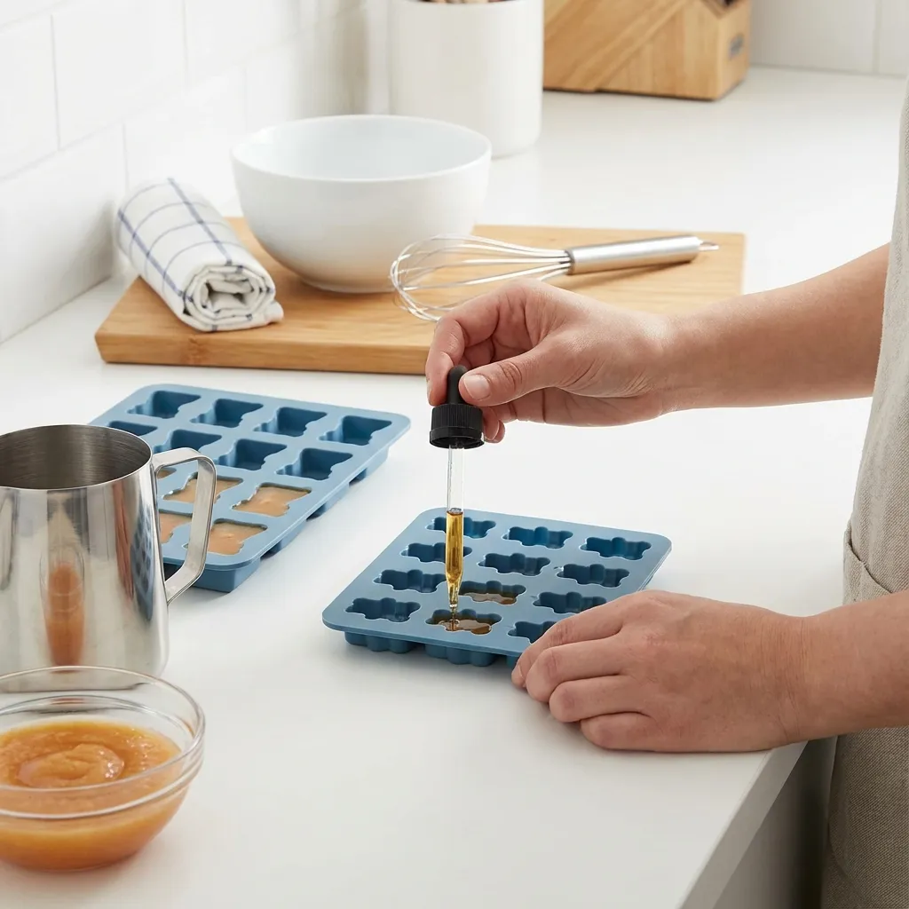

Gominolas de Vinagre de Manzana: Salud Deliciosa
Las gominolas de vinagre de manzana caseras son una forma revolucionaria de obtener los beneficios del vinagre de manzana sin el sabor ácido intenso. Estas gomitas funcionales, elaboradas con ingredientes naturales y gelatina, ofrecen apoyo para el control de peso, regulación del azúcar en sangre y salud digestiva de manera deliciosa. Esta receta elimina azúcares refinados y aditivos artificiales presentes en versiones comerciales.

📊 Datos Generales
⏱️ Tiempo de Preparación: 15 minutos
🔥 Cocción: 15 minutos (preparación + gelificado)
⏰ Total: 30 minutos (+ 2 horas refrigeración)
🍽️ Porciones: 4 personas (40 gominolas aprox.)
📈 Calorías: 220 kcal por porción (10 gominolas) | Proteína 15g | Carbohidratos 18g | Grasas saludables 10g
🍎 Ingredientes
- ½ taza de vinagre de manzana crudo con "madre" (120ml)
- ½ taza de jugo de manzana 100% natural sin azúcar añadida (120ml)
- 3 cucharadas de gelatina en polvo sin sabor (21g)
- 3 cucharadas de miel cruda o sirope de arce (opcional, para endulzar)
- 1 cucharadita de jugo de limón fresco
- ¼ cucharadita de jengibre en polvo (opcional, potencia efectos digestivos)
- Pizca de cúrcuma en polvo (opcional, antiinflamatorio)

👨🍳 Preparación Paso a Paso
- Preparar los moldes: Rocía ligeramente moldes de silicona para gomitas con aceite de coco (usa un papel toalla para distribuir una capa muy fina). Esto facilitará desmoldar las gomitas. También puedes usar un molde pequeño y cortar en cubos después.
- Mezclar líquidos fríos: En un tazón mediano, combina el jugo de manzana y el vinagre de manzana. Espolvorea la gelatina en polvo sobre la superficie del líquido de manera uniforme. NO mezcles todavía. Deja reposar 5 minutos para que la gelatina "florezca" (se hidrate y espese).
- Calentar suavemente: Transfiere la mezcla a una olla pequeña. Calienta a fuego BAJO-MEDIO, removiendo constantemente con una cuchara de madera durante 5-7 minutos. La gelatina debe disolverse completamente. NO permitas que hierva, ya que el calor excesivo puede destruir enzimas beneficiosas del vinagre y degradar la gelatina.
- Añadir endulzante y especias: Una vez disuelta la gelatina, retira del fuego. Incorpora la miel (si usas), jugo de limón, jengibre y cúrcuma. Mezcla bien hasta integrar completamente.
- Verter en moldes: Con cuidado, vierte la mezcla líquida en los moldes de silicona usando una jarra medidora o cuchara. Llena cada cavidad hasta el borde. Si aparecen burbujas en la superficie, pásales un palillo para eliminarlas.
- Refrigerar: Lleva los moldes al refrigerador y deja enfriar durante mínimo 2 horas hasta que las gomitas estén completamente firmes y gelificadas.
- Desmoldar: Presiona suavemente la parte inferior del molde de silicona para liberar las gomitas. Si usaste un molde rígido, corta en cubos pequeños con un cuchillo afilado.
- Conservar: Guarda las gomitas en un recipiente hermético de vidrio en el refrigerador. Duran hasta 2 semanas. NO las dejes a temperatura ambiente por más de 1 hora, ya que la gelatina puede ablandarse.

💪 Información Nutricional Destacada
Las gominolas de vinagre de manzana ofrecen beneficios respaldados por investigación científica:
- Ácido acético (5%): Componente principal del vinagre que mejora la sensibilidad a la insulina, reduce picos de glucosa post-prandial hasta un 34% y potencia la quema de grasas aumentando la expresión génica AMPK [1, 2]
- Control de peso: Aumenta la sensación de saciedad en un 55%, reduce el apetito y puede ayudar a perder 2-4 kg en 12 semanas cuando se combina con dieta equilibrada [3]
- Probióticos naturales: El vinagre crudo con "madre" aporta bacterias beneficiosas (Acetobacter) que mejoran la flora intestinal y digestión
- Enzimas digestivas: Contiene pectinasa y amilasa que facilitan la digestión de carbohidratos y fibras vegetales
- Polifenoles antioxidantes: Ácido clorogénico, ácido gálico y catequinas que combaten radicales libres y reducen el estrés oxidativo celular
- Minerales esenciales: Aporta potasio (73mg por porción), magnesio, calcio y fósforo para función muscular y equilibrio electrolítico
- Desintoxicación hepática: Apoya la fase 2 de detoxificación del hígado, ayudando a eliminar toxinas de manera más eficiente
- Colágeno de gelatina: La gelatina aporta 6g de proteína por porción, apoya la salud de articulaciones, piel, cabello y uñas
✨ Tips y Variaciones
- Momento ideal de consumo: Toma 2-3 gomitas 15-20 minutos ANTES de comidas principales (especialmente aquellas con carbohidratos) para maximizar el efecto sobre saciedad y control glucémico
- Versión vegana: Sustituye la gelatina animal por agar-agar (usa 2 cucharaditas en lugar de 3 cucharadas de gelatina). El agar-agar gelifica a temperatura ambiente y crea textura más firme
- Sabores gourmet: Experimenta con jugo de arándano, granada o jengibre fresco rallado para variar sabores. Añade extracto de vainilla o canela para perfiles más complejos
- Sin azúcar total: Omite la miel y usa stevia líquida (5-8 gotas) o eritritol para una versión cetogénica con solo 15 kcal por porción
- Boost vitamínico: Añade ¼ cucharadita de espirulina, maca en polvo o açaí para nutrientes adicionales y color vibrante
- Combo metabólico: Combina con té de hoja de morera antes de comidas ricas en carbohidratos para efecto sinérgico potenciado sobre glucosa sanguínea
- Textura perfecta: Si las gomitas quedan muy duras, reduce gelatina a 2½ cucharadas. Si quedan muy blandas, aumenta a 3½ cucharadas
- Niños y sabor: Para niños reacios al vinagre, aumenta la proporción de jugo de manzana a ¾ taza y reduce vinagre a ¼ taza. Aumenta miel a 4 cucharadas
- Dosificación recomendada: Adultos: 2-3 gomitas 2 veces al día. Máximo 6 gomitas diarias. Niños mayores de 8 años: 1-2 gomitas al día con supervisión
- Precauciones: Si tomas medicamentos para diabetes (metformina, insulina) o diuréticos, consulta con tu médico antes de consumir regularmente, ya que el vinagre puede potenciar efectos
- Esmalte dental: Aunque las gomitas son menos ácidas que el vinagre líquido, enjuaga tu boca con agua después de consumirlas para proteger el esmalte dental
Estas gominolas caseras ofrecen una alternativa superior a los productos comerciales que suelen contener jarabe de maíz alto en fructosa, colorantes artificiales y concentraciones mínimas de vinagre. Al prepararlas en casa, controlas la calidad de ingredientes y maximizas beneficios para salud metabólica, digestiva y control de peso.
Referencias Científicas
- Santos HO, et al. (2019). "Vinegar (acetic acid) intake on glucose metabolism: A narrative review". Clin Nutr ESPEN, 32:1-7. PubMed PMID: 31221273
- Ostman E, et al. (2005). "Vinegar supplementation lowers glucose and insulin responses and increases satiety after a bread meal in healthy subjects". Eur J Clin Nutr, 59(9):983-8. PubMed PMID: 16015276
- Valdes DS, et al. (2021). "Effect of Dietary Acetic Acid Supplementation on Plasma Glucose, Lipid Profiles, and Body Mass Index in Human Adults: A Systematic Review and Meta-analysis". J Acad Nutr Diet, 121(5):895-914. PubMed PMID: 33436350
💚 Encuentra Ingredientes para Gominolas en Amazon
Descubre vinagre de manzana orgánico con "madre", gelatina de alta calidad grass-fed y moldes de silicona para preparar tus gomitas caseras.
Ver Productos en Amazon →